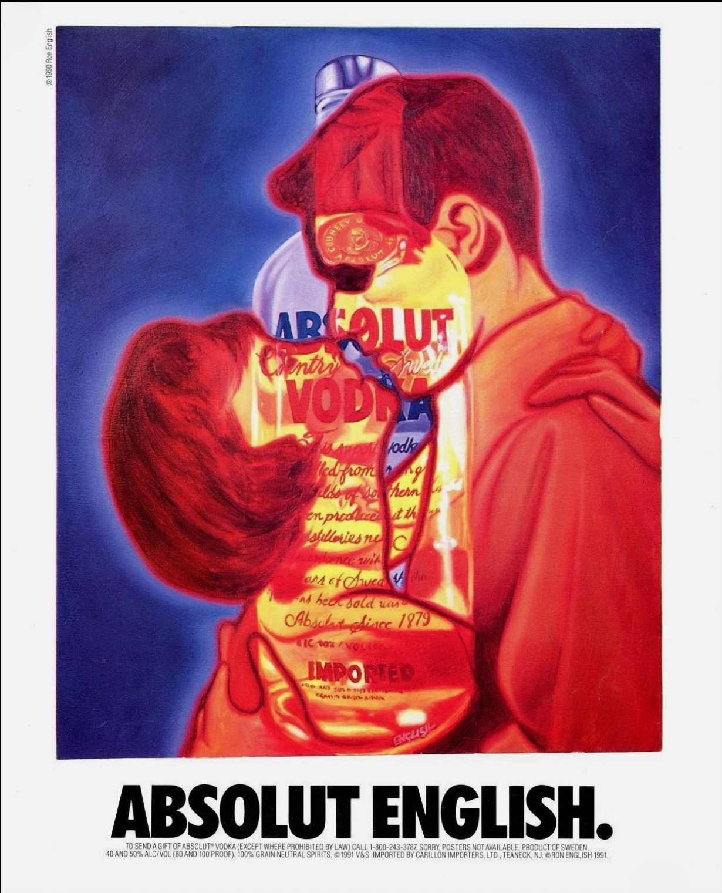

Exhibitions
Absolut Artists of the Nineties, Laura Larkin Gallery, Del Mar, California, US, 1991.
Literature
Ron English, Popaganda: The Art & Subversion of Ron English (San Francisco: Last Gasp, 2001), p. 154. ISBN 1-887128-60-3.
Notes
Dimensions are approximate and are based on visual comparison and available documentation.
The work appears on Absolut Connection’s gallery page Absolut Artists of the 90s, available here, accessed April 16, 2026.
It is also documented in the November 1991 issue of Connoisseur, as recorded on an eBay listing titled Connoisseur - 1991, November - Baryshnikov, Tito's Retreats, Absolut English, available here, accessed April 16, 2026.
Ancillary Documentation

